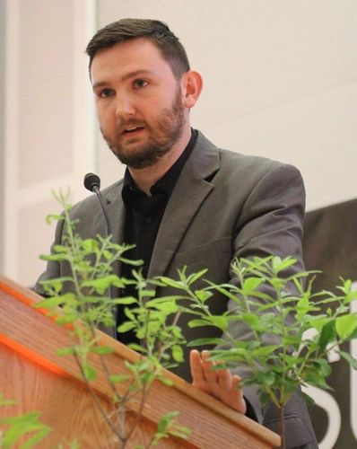

Master of Science
Forest Resources and Conservation
Geomatics · University of Florida
4.0 GPA
Graduate student · University of Florida
Understanding forests through remote sensing and AI.
MS student in Forest Resources and Conservation, with a concentration in Geomatics, at the University of Florida.

Artificial intelligence
Deep learning
Forest structure & disturbance
About me
I am a graduate student in the School of Forest, Fisheries, and Geomatics Sciences at the University of Florida and a graduate assistant in the Forest Biometrics, Remote Sensing and Artificial Intelligence Laboratory (Silva Lab).
My work brings together terrestrial laser scanning, satellite imagery, and artificial intelligence to study forest structure and assess disturbance. I develop geospatial workflows that connect field measurements with LiDAR and satellite imagery for 3D forest modeling and analysis.
My research includes classifying Spanish moss in terrestrial laser scanning point clouds. I am also a co-author of FuelDeep3D, an R package for classifying forest fuel components with deep learning, and ICESat2VegR, an R package for analyzing NASA’s ICESat-2 land and vegetation data.
Alongside research, I have supported undergraduate teaching in natural resource policy and economics and contributed to forest restoration, youth outreach, and the organization of ForestSAT 2026.
Forest Resources and Conservation
Geomatics · University of Florida
4.0 GPA
Forest Resources and Conservation
University of Florida
Explore where visitors to this website are connecting from.
Visitor totals and approximate countries are provided by Flag Counter. Counting begins with this redesign; these are not historical site totals. The map may be unavailable if third-party images are blocked.
View visitor statistics ↗